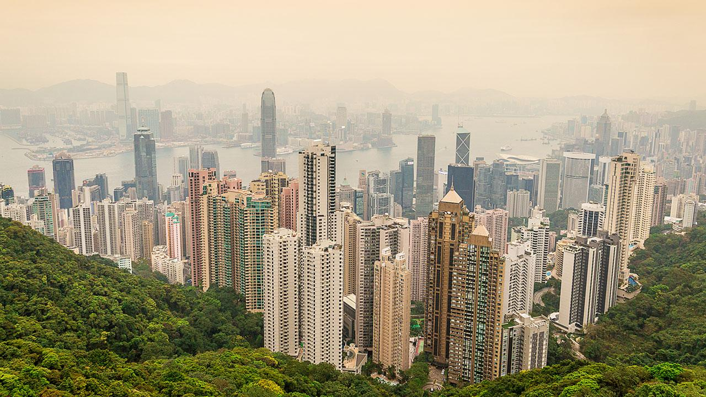
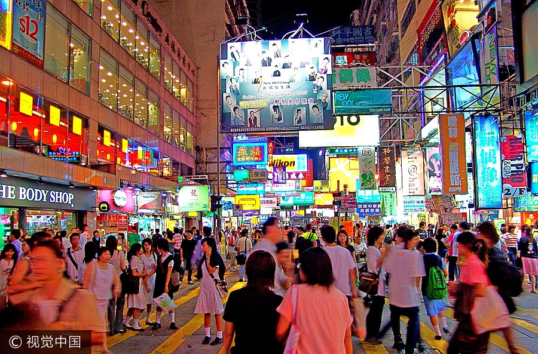
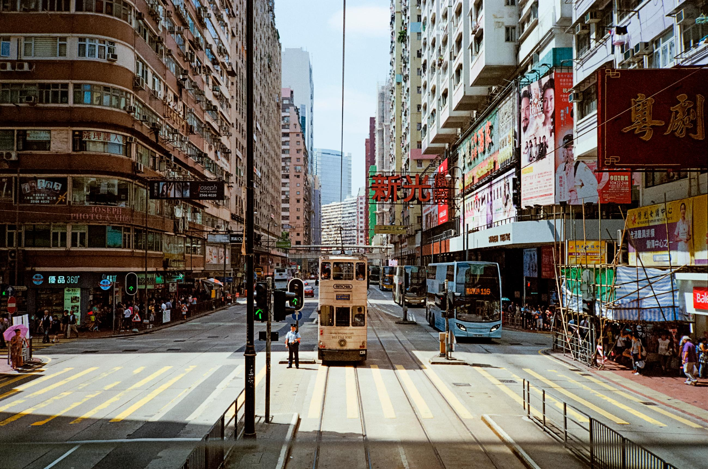
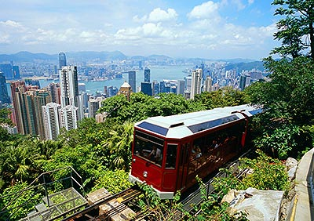
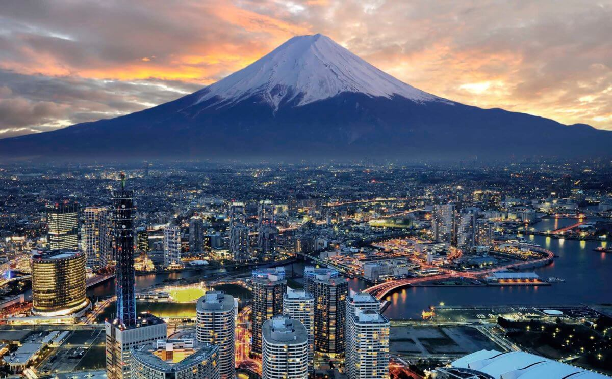
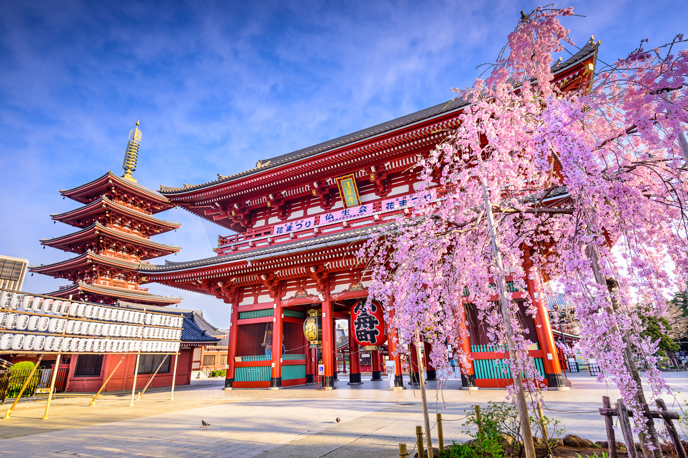

Hong Kong, China
Hong Kong is one of the most international cities in the world. Its unqiue in that it still has a lot of british influence in its culture in terms of language, architecture and some culture. They even drive on the left side of the road. There is still a lot of Chinese culture that makes Hong Kong unique such as the tradition of hot pot. I had an amazing trip here and really enjoyed the traditionl food to Hong Kong. I ate a lot fo eggplant and chili pepper based dishes. It was also very infleunced by the british culture which, as someone who grew up in the UK, I loved.





Tokya, Japan
Besides being another diverse dynamic city in Asia, Tokyo is also one of the fashion capitals of the world. With new trends emerging and Asian designers such as MCM Tokyo is always growing and inspiring new ideas in fashion. It also is one of the most forward cities in technology having the first underground parking garages.




